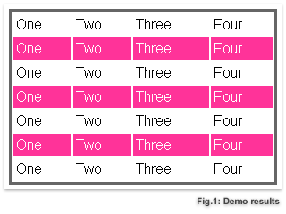

jQuery
Agenda
- Introduktion till jQuery
- API
- jQuery under huven
- Prestanda
- Anti patterns
- Plugins
- Anpassning
- Släppt 2006 av John Resig @jeresig
- Open Source (https://github.com/jquery/jquery)
- Sköts av jQuery Foundation (http://jquery.org)
- Licensierat under MIT
jQuery Foundation Projects
Historik
| Version | |||
|---|---|---|---|
| 0.X | 2005-08-22 | John Resig nämner på sin blogg att han jobbar på ett nytt JS-bibliotek | |
| 1.0 | 2006-08-26 | Första release | |
| 1.1 | 2007-06-17 | Plugin repository | |
| 1.2 | 2007-09-17 | jQuery UI släpps | |
| 1.2.6 | 2008-05-09 | QUnit 1.0 | |
| 1.3 | 2009-01-14 | Inför Sizzle | |
| 1.5 | 2011-01-31 | Stor $.ajax refaktorering. Inför Deferred | |
| 1.7 | 2011-11-03 | Nytt event-API. Inför on/off. Registrerar sig själv som en AMD-modul | |
| 1.7 | 2011-11-16 | jQuery Mobile 1.0 | |
| 1.7.2 | 2012-04-06 | jQuery Foundation bildas | |
| 2.0 / 1.10 | 2013-04-18 | Två brancher, 2.0 för moderna browsers (IE9+) och 1.10 för äldre | |
| 2.1 / 1.11 | 2013-11-16 | Infört AMD internt. 2.0-versionen publiceras till npm | |
Community
- Repository github.com/jquery/jquery
-
- 5955 forks
- 2532 watchers
- 27738 stars
- API api.jquery.com
- Bugs bugs.jquery.com
- Learn learn.jquery.com
- Forum forum.jquery.com
- Plugins plugins.jquery.com
Hello World!
<script src="//code.jquery.com/jquery-1.10.2.js"></script>
jQuery(document).ready(function() {
console.log('Hello World!');
});
Vad är jQuery?
Cross browser DOM-wrapper?
Schweizisk armékniv?
JavaScript!
Vad hjälper jQuery oss med?
DOM events
Registrera event på DOM-element
function listen(evt, el, func) {
// W3C DOM
if (el.addEventListener) {
el.addEventListener(evt, func, false);
// < IE9 DOM
} else if (el.attachEvent) {
el.attachEvent('on' + evt, func);
} else {
throw 'Opps!';
}
}
listen('click', document.getElementById('btn'), function() {
console.log('Click!');
});
DOM events med jQuery
Fungerar i alla browsers!
jQuery('#btn2').on('click', function() {
console.log('Clicked!');
});
DOM Selectors

var tables = document.getElementsByTagName('table');
for (var t = 0; t < tables.length; t++) {
var rows = tables[t].getElementsByTagName('tr');
for (var i = 1; i < rows.length; i += 2) {
if (!/(^|\s)odd(\s|$)/.test(rows[i].className)) {
rows[i].className += ' odd';
}
}
}
DOM Selectors jQuery
$('tr:nth-child(odd)').addClass('odd');
Cross Browser AJAX Get
var xhrGet = function(url, callback) {
var xhr;
if (window.XMLHttpRequest) {
// W3C
xhr = new XMLHttpRequest();
} else {
// IE < 9
var activeXNames = ['MSXML2.XMLHTTP.3.0',
'MSXML2.XMLHTTP',
'Microsoft.XMLHTTP'];
for (var i = 0; !xhr && i < activeXNames.length; i++) {
try {
xhr = new ActiveXObject(activeXNames[i]);
} catch(e) {
}
}
}
if (!xhr) {
throw 'Could not create XMLHttpRequest!';
}
xhr.onreadystatechange = function() {
// 4 === complete
if (xhr.readyState !== 4) {
return;
}
if (xhr.status !== 200 && xhr.status !== 304) {
throw 'Error!';
}
callback(xhr.responseText);
}
xhr.open('GET', url, true);
xhr.send(null);
};
xhrGet('//localhost/date', function(res) {
console.log('Response', res);
});
jQuery AJAX Get
jQuery.get('//localhost/date', function(res) {
console.log('Response', res);
});
API
Uppdelat i olika moduler *
- Core
- DOM
- Traversing
- CSS
- Ajax
- Utilities
* Går nu även att exkludera moduler
jQuerys grundkoncept
Get some elements, do something with them
Get some elements...
jQuery('div');
//-^---- Skapar ny jQuery instans
Get some elements...
$('div');
//-^- Skapar ny jQuery instans
Get some elements...
$('div');
//---^- Selector, hämta alla div-taggar.
Get some elements...
$('div.foo');
//-^---- Selector, hämta alla div-taggar med klassen '.foo'
Get some elements...
$('a[href="#"]');
//^---- Selector, hämta alla a-taggar med attributet 'href=#'
Do something with them...
$('.hidden')
.show();
//----^--- Do something
Do something with them...
$('li')
.addClass('list-item')
.on('click', function() {
console.log(
$(this).hasClass('list-item');
//--^-- <li />
);
});
Create some elements...
$('<li>');
//^---- "Create" (styrs av < > taggarna)
Create some elements...
- My list item
$('<li>')
//... Do something...
.text('My other item')
.css({ color: 'green' })
.appendTo('#result');
jQuery internt
Vad händer när vi skriver $('...');?
(function(window, undefined) {
var rootjQuery,
_$ = window.$,
jQuery = function(selector, context) {
return new jQuery.fn.init(selector, context, rootjQuery);
};
// Utilities
jQuery.extend = function() {
// ...
};
jQuery.noConflict = function() {
window.jQuery = window.$ = _$;
return jQuery;
};
jQuery.fn = jQuery.prototype = {
constructor: jQuery,
length: 0,
selector: '',
init: function(selector, context, rootjQuery) {
// Get some elements...
return this;
}
// Mer metoder på jQuery.prototype (do something...)
};
jQuery.fn.init.prototype = jQuery.fn;
if (typeof module === 'object' && typeof module.exports === 'function') {
// CommonJS
module.exports = jQuery;
} else {
// Expose to global object
window.jQuery = window.$ = jQuery;
// AMD
if (typeof define === 'function' && define.amd) {
define('jquery', [], function () { return jQuery; });
}
}
}(window));
console.log('static jQuery.extend', typeof jQuery.extend);
console.log('jQuery.fn', jQuery('div'));
jQuery.noConflict();
Drygt 20% av alla publika sajter, som använder JavaScript, använder jQuery
Många tredjeparts ramverk "drar in" jQuery JSF, ASP.NET, Ruby On Rails etc????
Många MV* ramverk använder jQuery
jQuery like libraries
Finns enkla "jQueryish" hjälpbibliotek